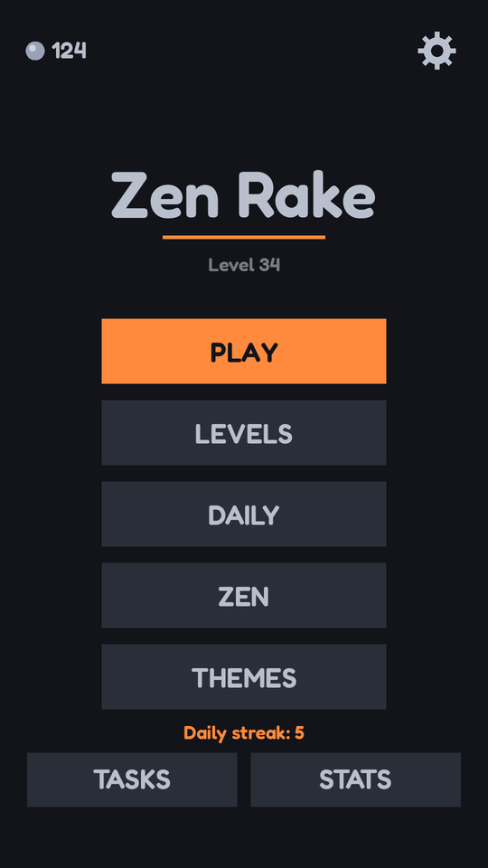
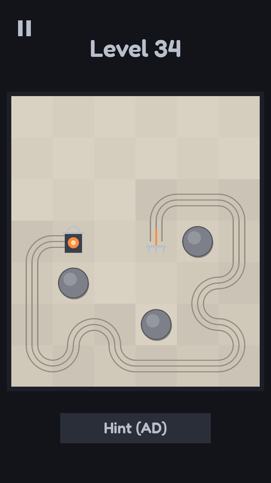
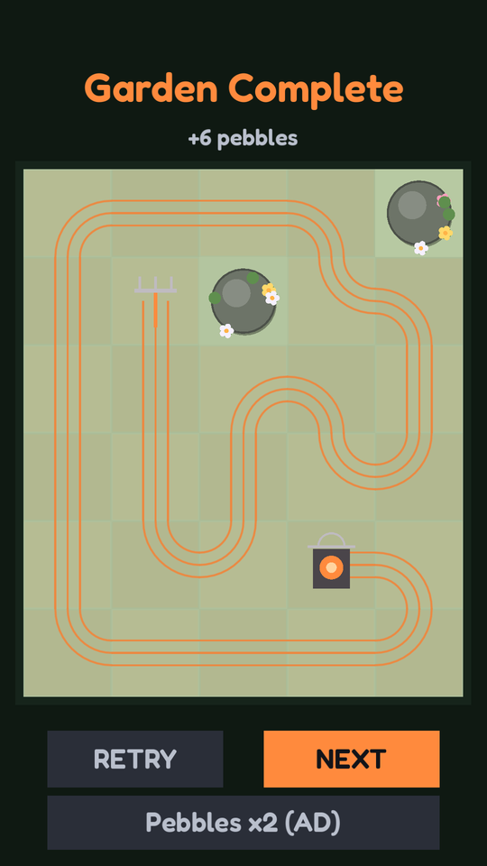

Puzzle · Android
Zen Rake
Rake every patch of sand in the garden with one continuous line. Do not cross your own path and do not touch the stones. Calm, simple and a little different on every garden.



Features
- 140 journey gardensSeven themed gardens that grow from small 4x4 yards to large 8x11 gardens.
- Daily GardenA new, larger garden every day with a streak counter and bonus pebbles.
- Zen modeEndless random gardens with no score and no rewards. Just rake.
- Soft soundsEvery tile adds a gentle rustle and a rising note. A finished garden glows and blooms.
- Themes and goalsSix themes to unlock with pebbles, daily tasks, a login streak and fourteen achievements.
- English and TurkishOptional rewarded hints. No pushy pop-ups.